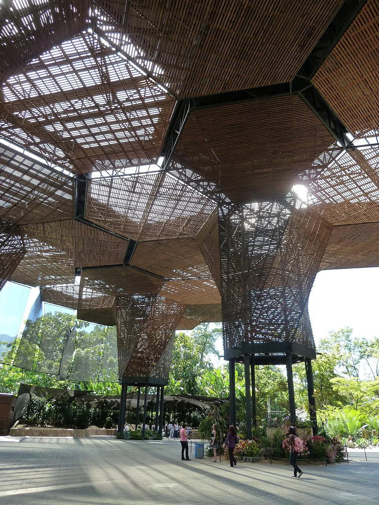

En el Orquideorama se puede estar bajo techo y seguir viendo el cielo. No sucede porque la cubierta haya quedado inconclusa: cada una de sus unidades deja un patio abierto en el centro.
Esa decisión organiza la estructura, el agua, la ventilación y la relación con las plantas. Hace del vacío una parte construida del proyecto. La obra cumple veinte años desde su construcción en 2006, y la pregunta interesante ya no es si su geometría parece una flor. Es qué permitió hacer esa geometría en el Jardín Botánico de Medellín, qué clase de espacio produjo y qué ha exigido conservarlo. [1][2]
La respuesta comienza antes de mirar hacia arriba. El Orquideorama formó parte de la renovación del Jardín entre 2005 y 2007, después de una crisis que había afectado las colecciones, la infraestructura y la operación de la institución. El proyecto incluyó senderos, redes, edificios, un nuevo acceso y espacio público alrededor del predio. La Alcaldía lo describió entonces junto al cerramiento que debía permitir una relación visual con Carabobo y a un edificio científico destinado al herbario y al laboratorio. Una cubierta para exposiciones y encuentros llegaba, por tanto, dentro de una discusión mayor: cómo hacer público, accesible y sostenible un jardín que también es una institución de investigación. [3][4]
Conviene leer juntas esas escalas sin fundirlas. El diseño de una estructura no resuelve por sí solo el acceso a la ciudad, y un programa de renovación no demuestra que todos sus objetivos se cumplieran de la misma manera. La obra sí ofrece una respuesta arquitectónica reconocible: en vez de colocar una sala cerrada dentro del jardín, propone una trama que permite resguardarse y permanecer en contacto con él. Ese gesto parece sencillo en una fotografía; construirlo requirió distribuir soportes, servicios, patios y materiales según una regla capaz de repetirse sin arrasar la vegetación existente. [1]


El vacío está dibujado
Plan:b, responsable del proyecto junto con Camilo Restrepo y J. Paul Restrepo, describe el edificio como un dosel con apoyos intermitentes. En la ficha técnica identifica 4.000 metros cuadrados, columnas y cerchas metálicas, revestimientos de madera cultivada, adoquines de concreto y cubierta de metal y policarbonato. AGENdA, también vinculada a la autoría, sitúa el concurso en 2005 y la construcción en 2006. En sus documentos, cada «árbol-flor» está compuesto por siete hexágonos: seis organizan el perímetro cubierto y el central permanece abierto como jardín-patio. Diez unidades conforman la planta. No se trata de diez edificios puestos uno al lado del otro, sino de una regla que permite construir un campo continuo con interrupciones deliberadas. [1][2]
El nombre de árbol-flor puede inducir a una lectura demasiado rápida. La obra no reproduce una especie botánica ni necesita parecerse literalmente a una orquídea para funcionar. En planta, el módulo hexagonal permite que las unidades se agreguen sin imponer un rectángulo único. En altura, los apoyos y la expansión de la cubierta establecen una relación de escala con los árboles cercanos. La analogía natural resulta fértil cuando explica operaciones —ramificación, sombra, concentración de servicios, crecimiento por partes— y pierde fuerza cuando se usa únicamente como parecido visual. El logro está en la organización de relaciones, no en haber encontrado una figura decorativa para un edificio del jardín. [1]
Un dibujo del conjunto permite leer esa diferencia. Si se colorearan solamente las superficies techadas, los patios parecerían piezas ausentes. Si se marcaran también las aberturas, aparecería una segunda trama: entradas de lluvia, aire y luz distribuidas en la cubierta. Según la memoria de Plan:b, el hexágono central aloja jardines, seis columnas y redes de iluminación y recolección de agua; también permite la salida del aire caliente. AGENdA señala que cada módulo integra sus propias redes hidráulicas, eléctricas y de alcantarillado. El espacio abierto no quedó para después del cálculo. Tiene ubicación, dimensión y tareas dentro del sistema. [1][2]
La distinción importa para entender qué significa aquí «flexibilidad». No es un salón vacío que acepta cualquier uso mediante equipamiento temporal. Es un entramado bastante específico que puede crecer por adición y ajustarse al arbolado que ya había en el lugar. Plan:b afirma que el perímetro permitió ocupar el vacío dejado por un pabellón anterior sin tocar los árboles existentes. Esa afirmación explica la intención de los proyectistas; comprobar su resultado exacto exigiría comparar levantamientos del terreno y registros botánicos anteriores y posteriores a la obra. Aun así, revela un criterio preciso de diseño: la estructura se acomoda a condiciones presentes en vez de exigir un suelo abstracto y despejado. [1]
La geometría ayuda a coordinar la obra, pero no elimina la dificultad material. AGENdA describe estructuras metálicas soldadas en sitio, revestimiento de pino pátula procedente de un cultivo certificado, pisos de adoquín y tejas de policarbonato y lámina. Es una combinación de sistemas con vidas útiles y necesidades de mantenimiento distintas. La madera puede cambiar de tono, el metal necesita protección, la cubierta translúcida acumula suciedad y los puntos donde se encuentran materiales distintos son lugares vulnerables. Estas son consideraciones generales de construcción, no un diagnóstico del estado actual del Orquideorama. Para afirmar cómo envejeció cada componente habría que revisar inspecciones, sustituciones y reparaciones registradas durante veinte años. [1][2]
Decir que el proyecto es «natural» por usar madera o abrir patios sería impreciso. La madera fue cultivada y transformada; las cerchas son industriales; el policarbonato también. El ambiente entra en la obra mediante decisiones de localización, forma y uso de materiales, no por una virtud automática de sus apariencias. Tampoco se puede deducir ahorro energético de una fotografía. Hacen falta datos de desempeño, procedencia, reposición y operación. Una crítica de diseño gana más al preguntar cómo se articulan estos sistemas y cómo se mantienen que al premiar una imagen verde. El Orquideorama no necesita ser declarado perfecto para que su regla espacial resulte valiosa.
Esa regla se experimenta desde el suelo. Bajo la cubierta, los soportes no forman una fachada que establezca un adentro definitivo; aparecen a intervalos entre superficies de madera, plantas y recorridos. El adoquín recibe pasos, montajes y sillas móviles. El patio deja caer la luz y la lluvia en medio de un ámbito protegido. La arquitectura trabaja con gradientes: más o menos sombra, mayor o menor proximidad a la vegetación, continuidad entre jardín y espacio de reunión. Las fotografías históricas existentes ayudan a reconocer esas relaciones, aunque no registran temperatura, acústica, seguridad o experiencia de personas con distintas capacidades. Para evaluar estas condiciones se necesita observar el lugar hoy y escuchar a quienes lo usan y cuidan. [5][6]
La combinación entre soporte y apertura expresa una posición sobre el programa. Plan:b enumeró exposiciones de plantas y aves, conciertos, bodas, desfiles y festivales. No hay que asumir que todos esos usos ocurren con la misma frecuencia ni que se acomodan sin fricción. Un evento puede requerir sonido, iluminación, superficies de montaje y control de flujos que afectan la vida del jardín. La capacidad de alojarlo es distinta de la decisión de programarlo y de la responsabilidad de retirar sus huellas. La versatilidad de un espacio cultural se mide tanto por lo que admite como por lo que protege cuando una actividad termina. [1]
Una obra dentro de otra
El Jardín no nació con esta cubierta. En su historia institucional aparecen la antigua casa de baños El Edén, el Bosque de la Independencia creado en 1913 y la constitución posterior del Jardín Botánico Joaquín Antonio Uribe. La Sociedad de Mejoras Públicas, la Sociedad Colombiana de Orquideología y el municipio figuran en distintas etapas de ese proceso. Las prácticas cambiaron: paseo, ocio, colecciones botánicas, educación, conservación, investigación y eventos. El suelo ha sido público de maneras diferentes, y ninguna fotografía de arquitectura puede contener toda esa historia. El Orquideorama interviene en un lugar que ya tenía visitantes, árboles, trabajos cotidianos y conflictos de financiación. [3]
El relato del Jardín sitúa su renovación de 2005–2007 después de un período de dificultades económicas. Entre los principios declarados estuvieron conservar zonas verdes, limitar las edificaciones, facilitar desplazamientos, privilegiar al peatón y fortalecer la misión científica junto con el uso público. La institución señala además la relación prevista con Parque Explora y Carabobo. Esa formulación permite leer el Orquideorama como una parte de una política espacial y no como un objeto firmado que simplemente se posa en un parque. También obliga a evaluar el conjunto: senderos, accesos, edificios y mantenimiento importan tanto como la cubierta fotografiada. [3]
La memoria oficial de la Alcaldía es todavía más concreta. En un informe de gestión de 2004–2005, elaborado mientras la obra estaba en curso, registró el concurso arquitectónico de 2005, presupuestó 3.400 millones de pesos para el Orquideorama y describió el cambio del muro perimetral por un cerramiento más transparente, conectado al nuevo espacio público de Carabobo. Esas cifras son presupuestos históricos documentados, no costos finales auditados ni valores comparables sin ajuste a los actuales. Su interés aquí es mostrar que la intervención no se entendía como una pieza aislada: se discutía con la calle, el borde, la ciencia y el parque vecino. [4]
La transparencia del borde tiene consecuencias distintas de las de una cubierta. Un jardín puede ofrecer sombra y programación atractivas y, aun así, resultar lejano para alguien a quien le cuesta llegar, orientarse o entrar. En 2026, la Alcaldía informa que el ingreso general al Jardín es libre durante el año, salvo eventos especiales de pago; aconseja consultar antes de visitar. Esta regla de acceso añade una capa decisiva a la lectura del edificio. Un espacio materialmente abierto no equivale a una política pública de apertura, pero una política de entrada libre hace posible que la arquitectura sea vivida por personas que no asistirían a un evento pago. Las condiciones reales de accesibilidad, horarios y exclusiones requieren observación específica. [7]
La relación entre jardín y ciudad también puede juzgarse con una pregunta menos espectacular que la del «ícono urbano»: ¿qué recorridos cotidianos logra sostener? El informe de renovación habla del anillo exterior, de la conexión con Carabobo y de evitar que los visitantes se concentren en un único sector. Nada de eso se demuestra por el atractivo visual de la cubierta; son decisiones de movilidad, señalización y distribución de actividades. Un visitante que entra para caminar, otro que va a una exposición de orquídeas y una persona que participa en una feria necesitan orientaciones diferentes. La calidad pública surge de esa suma de decisiones ordinarias. [3]
En los años dos mil, Medellín invirtió en obras culturales y espacio público que reorganizaron su zona norte. El Jardín, Parque Explora, el Parque de los Deseos y los corredores peatonales fueron presentados como proyectos conectados. El Orquideorama suele circular como imagen ejemplar de ese momento, pero una celebración crítica debe resistir la tentación de hacerle representar por sí solo la transformación social de una ciudad. La arquitectura puede habilitar usos y producir lugares legibles; no sustituye políticas de vivienda, movilidad, acceso cultural y financiación. La contribución específica de esta obra consiste en mostrar una manera de construir un lugar compartido dentro de un ecosistema institucional y urbano más amplio. [3][4]
Esa precisión importa hoy, cuando Medellín vuelve a discutir el ordenamiento de su territorio. En noviembre de 2026, el Concejo aprobó la revisión de mediano plazo del Plan de Ordenamiento Territorial, con disposiciones relativas a vivienda, usos del suelo, renovación urbana, movilidad y protección ambiental. El POT no es una evaluación del Orquideorama y este ensayo no puede usar una cubierta como prueba de que esas disposiciones funcionarán. La coincidencia temporal sí permite afinar una pregunta pública: en medio de cambios de suelo y de usos, ¿qué espacios abiertos, mantenidos y accesibles puede garantizar la ciudad, y quién asume el costo de sostenerlos? [8]
La discusión sobre gentrificación exige el mismo cuidado. Sería abusivo presentar el Orquideorama como causa o remedio de desplazamientos sin datos territoriales y económicos. Tampoco basta elogiar un edificio público para afirmar que todos pueden aprovecharlo del mismo modo. La arquitectura ofrece condiciones espaciales; el precio de la vivienda, los trayectos, las jornadas laborales y los horarios institucionales determinan quién llega y permanece. El valor de estudiar una obra como esta no está en convertirla en respuesta universal, sino en observar con precisión dónde acaba la decisión arquitectónica y dónde comienzan otras responsabilidades de la ciudad.


Lo que se cuida para que siga abierto
Veinte años permiten distinguir entre una intención publicada y una vida posterior. En 2019, un balance del Jardín mencionó el mantenimiento del Orquideorama entre varias intervenciones de infraestructura. La nota no especificó materiales reemplazados, cantidades, costos de esa actuación ni resultados técnicos. Sirve como evidencia de una acción de cuidado reconocida por la institución, no para reconstruir toda la conservación del edificio. Una historia completa tendría que consultar contratos, inspecciones, fotografías fechadas y la experiencia de quienes limpian, montan actividades y reparan. La longevidad de una obra pública no se explica exclusivamente por la calidad de su primera idea. [9]
La programación ofrece otra huella, también parcial. En la Fiesta del Libro y la Cultura de 2026, el sector Q del Orquideorama alojó una muestra comercial de editoriales independientes, grupos, distribuidoras y entidades aliadas. El documento identifica un uso real dos décadas después de la construcción. No informa cómo se resolvieron la lluvia, el ruido, los residuos, el calor o la circulación durante los días de feria. No mide satisfacción ni efectos económicos del evento. Aun así, permite imaginar con exactitud una situación que la memoria de proyecto enunciaba de forma general: mesas de libros y personas reunidas bajo una cubierta cuyo patio central sigue perteneciendo al jardín. [10]
El uso comercial dentro de una institución científica y de acceso público no es una contradicción que pueda resolverse con un eslogan. Una feria puede financiar actividad cultural, reunir lectores y dar visibilidad a editores; también exige instalaciones temporales y produce presiones sobre recorridos y vegetación. La pregunta de diseño está en cómo se negocian esos efectos y cómo se decide la escala apropiada de cada actividad. Una cubierta flexible es una herramienta para hacerlo, nunca una autorización automática para ocuparla sin límite. El mismo espacio que recibe libros puede necesitar tiempo de recuperación, cuidado de superficies y un ritmo compatible con las colecciones cercanas.
Mirar el mantenimiento cambia incluso la manera de apreciar la forma. El patio central se celebra porque deja pasar el cielo; también deja pasar agua que debe conducirse y superficies que deben drenarse. La madera puede hacer más amable la escala de los apoyos; también necesita inspección y sustitución cuando envejece. La repetición modular ayuda a ordenar el proyecto; podría facilitar intervenciones por partes, aunque no podemos afirmar que así se haya reparado sin documentación. La crítica no rebaja la obra al señalar estas tareas. Hace visible el trabajo necesario para que una buena decisión de diseño siga siendo utilizable después de la inauguración.
Hay una diferencia entre lo que se ve desde una imagen y lo que se aprende caminando una obra. Las fotografías de 2007, 2010 y 2011 empleadas en la edición actual de RUMMOR muestran relaciones entre árbol, techo, apoyos y suelo; sus créditos y licencias constan junto a cada imagen. No muestran el estado de 2026. Tampoco representan necesariamente una jornada habitual. Para una edición definitiva haría falta una secuencia propia y fechada: llegada desde Carabobo, transición por el jardín, vista de las cubiertas desde abajo, patio durante la lluvia, contacto de un apoyo con el suelo, un momento sin evento y otro con actividad. No para multiplicar imágenes, sino para hacer comprobables las diferencias de uso que el texto describe. [5][6]
Esa secuencia fotográfica debería atender a las personas que la arquitectura tiende a convertir en escala. ¿Dónde se detienen? ¿Por qué trayecto cruzan? ¿Qué parte permite sentarse sin participar en una actividad? ¿Cómo circula una silla de ruedas durante un montaje? ¿Qué lugar ocupan jardineros, personal de aseo y equipos técnicos en la imagen pública del Orquideorama? No tenemos respuestas documentadas para todas esas preguntas. Formularlas evita que el espacio se juzgue solo desde el punto de vista de quien diseña o fotografía. La vida común de una cubierta aparece también en sus operaciones discretas.
La obra propone una lección transferible, pero no una forma repetible sin examen. Un edificio en otra ciudad podría organizarse con módulos hexagonales y fallar si no considera su arbolado, su régimen de lluvias, sus usos o la capacidad de mantener sus materiales. Lo que merece aprenderse es el método de coordinación: partir de un lugar ocupado, concentrar estructura y redes, distribuir vacíos, definir un sistema ampliable y discutir los programas que puede alojar. Incluso esa lectura tiene límites. La memoria de los autores documenta una intención y una solución; para probar su desempeño hacen falta registros posteriores independientes y observación directa.
El Orquideorama reúne dos tiempos. El primero es el de su concepción: un concurso, una institución que necesitaba renovarse y un equipo que convirtió módulos y patios en una cubierta abierta. El segundo es menos fotogénico: cambios de programa, mantenimiento, acceso cotidiano y nuevos debates sobre el suelo urbano. Una celebración de veinte años debería permitir que ambos aparezcan. Admirar la claridad de una sección constructiva no obliga a ocultar las preguntas pendientes sobre uso y cuidado. Por el contrario, son esas preguntas las que prueban que la obra continúa perteneciendo a la ciudad y no solamente a su archivo de imágenes. [1][2][3][9]
La inteligencia de lo abierto reside, finalmente, en una decisión verificable: cubrir sin cerrar por completo. Su valor cultural no se agota en la forma que produjo. Depende de que el Jardín siga pudiendo entrar en la arquitectura, de que distintos públicos puedan entrar en el Jardín y de que existan personas y recursos para sostener ambos accesos. El patio central no es un vacío en la explicación de la obra. Es el lugar desde el cual podemos hacer la pregunta más útil para los próximos veinte años: ¿qué debe seguir abierto, y quién se compromete a cuidarlo?
Fuentes.
- Plan:b, ficha y memoria del Orquideorama. Autoría, sistema, programa, materiales y datos técnicos del proyecto.
- AGENdA, Orquideorama. Concurso, diez módulos y especificación constructiva.
- Jardín Botánico de Medellín, historia institucional. Trayectoria del lugar y renovación de 2005–2007.
- Alcaldía de Medellín, informe de gestión 2004–2005, pp. 114–115. Presupuestos y programa urbano declarados durante la obra.
- To (+) B, fotografía del árbol y la cubierta, 2007; licencia CC BY 2.0.
- einalem, fotografía del interior, 2011, CC BY-SA 2.0; Jorge Láscar, fotografía del patio, 2010, CC BY-SA 3.0.
- Alcaldía de Medellín, ingreso subsidiado a museos y parques. Condiciones publicadas para la entrada al Jardín.
- Alcaldía de Medellín, aprobación de la revisión del POT, 05.11.2026. Marco actual de debate territorial; no es una evaluación del edificio.
- Jardín Botánico de Medellín, balance institucional, 15.07.2019. Mención documentada del mantenimiento.
- Fiesta del Libro y la Cultura, expositores 2026. Registro del sector Q del Orquideorama.
Alcance: ensayo de crítica de diseño basado en documentación abierta consultada el 17.11.2026. No hubo visita, entrevistas, mediciones de confort ni inspección constructiva. Las fotografías citadas son históricas; no prueban el estado actual del recinto.